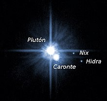
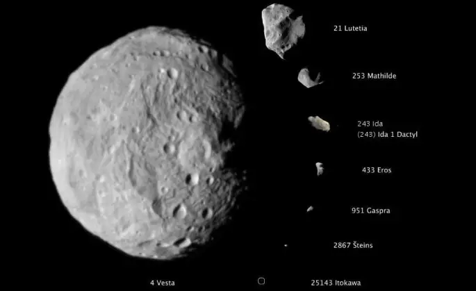

🌍 Los Planetas y sus Órbitas
Los planetas giran alrededor del Sol en órbitas elípticas. Estas órbitas tienen una forma ovalada, no perfectamente circular. La Ley de Kepler describe cómo los planetas se mueven más rápido cuando están cerca del Sol y más lentamente cuando están más lejos. Las órbitas de los planetas están influenciadas por la gravedad del Sol.
Características principales:
- 🔄 Órbitas elípticas: No son perfectamente circulares, tienen un foco en el Sol.
- 📐 Ley de Kepler: Los planetas se mueven más rápido cuando están cerca del Sol y más lentamente cuando están más lejos.
- 🌞 Distancia al Sol: Varía para cada planeta, siendo la más corta la de Mercurio y la más larga la de Neptuno.
- 🛸 Inclinación axial: Algunos planetas tienen inclinación en su eje, lo que causa estaciones, como en la Tierra.
Planetas principales:
- ⚪ Mercurio: El más cercano al Sol y el más pequeño.
- 💛 Venus: Con una atmósfera densa y temperaturas extremas.
- 🌎 Tierra: Nuestro hogar, con agua en estado líquido y vida.
- 🔴 Marte: El "planeta rojo", con signos de agua en el pasado.
- 🪐 Júpiter: El gigante gaseoso, con la gran tormenta roja.
- 💍 Saturno: Con su espectacular sistema de anillos.
- 💙 Urano y Neptuno: Planetas helados y lejanos, conocidos como gigantes gaseosos.

🪐 Los Planetas Enanos
Los planetas enanos son cuerpos celestes que orbitan el Sol, pero no han limpiado su órbita de otros objetos. Son pequeños y no cumplen con todas las características necesarias para ser clasificados como planetas completos.
Ejemplos de planetas enanos:
- 🌑 Plutón: Antiguamente considerado el noveno planeta del sistema solar, fue reclasificado como un planeta enano en 2006.
- 🪐 Ceres: El único planeta enano en el cinturón de asteroides, entre Marte y Júpiter.
- 🌟 Haumea y Makemake: También en el cinturón de Kuiper, se consideran planetas enanos.
Características comunes de los planetas enanos:
- 🟣 Tamaño pequeño: Son más pequeños que los planetas, pero lo suficientemente grandes para tener forma esférica.
- 🌌 Órbita: Orbitan el Sol, pero no tienen la suficiente gravedad para limpiar su órbita de otros cuerpos celestes.
- 🪐 Región: Generalmente se encuentran en el cinturón de Kuiper o en la zona transneptuniana del sistema solar.

☄️ Los Cuerpos Pequeños del Sistema Solar
Los cuerpos pequeños son una categoría que incluye asteroides, cometas, meteoroides y otros objetos que orbitan alrededor del Sol. Aunque son pequeños en comparación con los planetas, juegan un papel importante en la formación del sistema solar y la historia de la Tierra.
Tipos de cuerpos pequeños:
- 🪐 Asteroides: Fragmentos grandes de rocas que no llegaron a formar un planeta, principalmente en el cinturón de asteroides.
- ☄️ Cometas: Cuerpos de hielo y polvo que, al acercarse al Sol, liberan gas y polvo, creando una cola brillante.
- 🌠 Meteoroides: Fragmentos más pequeños que los asteroides. Cuando entran en la atmósfera y se queman, se convierten en meteoros.
Importancia de los cuerpos pequeños:
- 🔬 Formación del sistema solar: Son vestigios de la formación del sistema solar, ayudando a entender su composición primitiva.
- 💥 Impactos: Aunque pequeños, los asteroides y cometas han tenido un gran impacto en la Tierra, como el que causó la extinción de los dinosaurios.
- 🚀 Exploración: Misiones como OSIRIS-REx, que visitó el asteroide Bennu, están proporcionando información valiosa sobre estos cuerpos pequeños.
